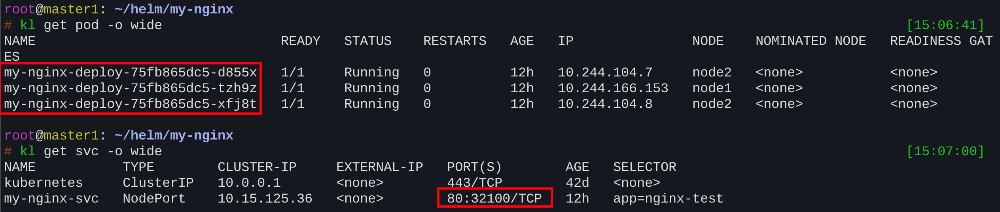
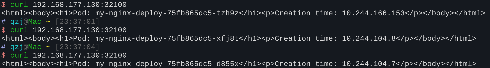
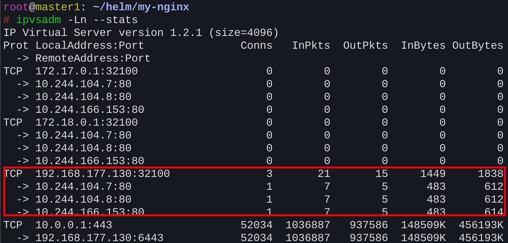
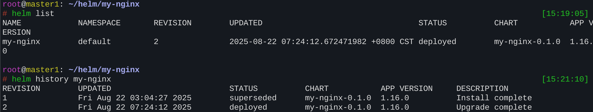

介绍了 Helm 的基本概念、安装方法、常用命令以及如何使用 Helm 模拟部署多个前端服务的示例。
什么是 Helm
Helm 是 Kubernetes 的一个包管理器。在没有 Helm 之前，部署一个复杂的
K8s 应用需要手动部署 deployment、svc
等多个资源，步骤繁琐。
Helm 通过打包的方式，将 K8s 应用的各种资源（如 Deployment, Service, ConfigMap 等）以及其配置信息集合在一起，实现了版本管理，极大地简化了 K8s 应用的部署和管理。
Helm 的本质是让 K8s 的应用管理可配置，可以动态生成
K8s 资源清单文件（如 deployment.yaml,
service.yaml），然后调用 kubectl
执行部署。
Helm 重要概念
Helm 有两个重要的概念：chart 和
release。
Chart
chart 是一个应用的信息集合，包括各种 Kubernetes 对象的配置模板、参数定义、依赖关系和文档说明。它是应用部署的自包含逻辑单元，可以将其想象成 apt 或 yum 中的软件安装包。
Release
release 是 chart 的运行实例，代表了一个正在运行的应用。当 chart 被安装到 Kubernetes 集群时，就会生成一个 release。同一个 chart 能够多次安装到同一个集群，每次安装都是一个独立的 release。
类似于docker里images 和 containers的关系
Helm 使用
Helm 是 Kubernetes 的包管理工具，类似于 Linux 的 yum/apt
或 Python 的
pip。安装方式有多种，这里给出最常用的一种脚本安装方式：
1 | curl -fsSL -o get_helm.sh https://raw.githubusercontent.com/helm/helm/main/scripts/get-helm-3 |
安装完成后，可以执行以下命令确认：
1 | helm version |
输出版本信息则表示安装成功。
1. 仓库管理
1 | helm repo add bitnami https://charts.bitnami.com/bitnami # 添加仓库 |
2. 查找和查看 Chart
1 | helm search hub wordpress # 在 Artifact Hub 上搜索 chart |
3. 安装 Chart
1 | # 安装一个 chart |
📌 配置方式：
-f values.yaml：通过配置文件覆盖默认参数（推荐，便于版本管理）。--set key=value：命令行直接覆盖参数，适合临时修改。
4. 查看 Release 信息
1 | helm list # 查看集群中所有 release |
5. 升级与回滚
1 | helm upgrade -f new-values.yaml my-apache bitnami/apache # 升级 release |
选项：
--timeout：设置超时时间（默认 5 分钟）。--wait：等待所有 Pod 就绪后才认为安装/升级成功。
6. 卸载 Release
1 | helm uninstall my-apache # 卸载 release |
查看历史卸载的 release：
1 | helm list --all |
7. 创建自定义 Chart
1 | helm create myapp # 创建模板项目 |
在
templates/目录下编写deployment.yaml、service.yaml等模板。在
values.yaml中定义变量，例如镜像名、副本数、端口。安装自定义 chart：
1 | helm install myapp ./myapp |
Helm模拟部署多个前端服务
创建一个空Helm模版，删除用不到的文件
1 | helm create my-nginx |
需求：
- 需要同时部署5个nginx服务
- 需要提供外部高可靠的访问
- 访问每个nginx服务时显示各自的pod名称和podIP
- 可以动态修改服务数量，修改暴露的外部接口访问地址，升级或更改镜像
创建templates/depolyment.yaml
1 | apiVersion: apps/v1 |
创建templates/service.yaml
1 | apiVersion: v1 |
创建values.yaml（里面的属性都是通过.Values调用）
1 | app: nginx-test |
这里之所以要用InitContainer，是因为尽量不要干扰主容器Nginx的配置
数据准备操作尽量放在InitContainer中进行，利用临时卷或其他卷来实现数据传递
运行
1 | helm install my-nginx ../my-nginx/ |

之后在外部机器用curl访问暴露的32100端口，可以看出实现了负载均衡

svc暴露的NodePort，会在集群每个Node上的生成对应的IPVS规则，因此你可以访问任意一台Node上的32100端口，IPVS会将你的请求转发到特定的pod上
可以用
ipvsadm -Ln --stats来查看Node上已经部署的IPVS规则
可以看到目标端口为32100的请求会转发到三个地址，即实际nginx-pod的地址
因为此时已经在集群内，使用的是CNI里的内部IP进行转发
之后需要进行端口更改或者镜像升级，直接修改values.yaml文件，然后运行
1 | helm upgrade my-nginx ../my-nginx |
可以查看所有的历史版本
